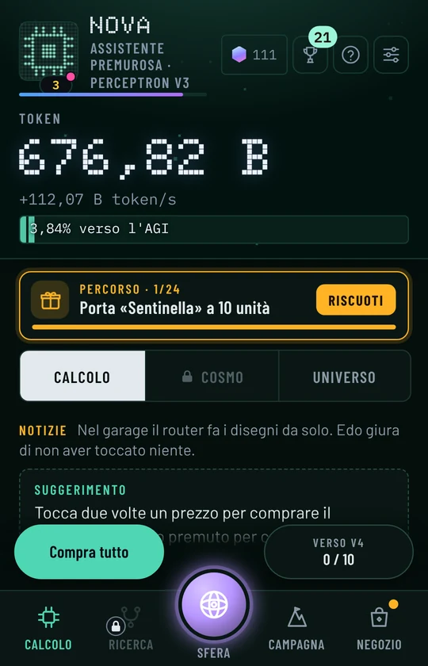
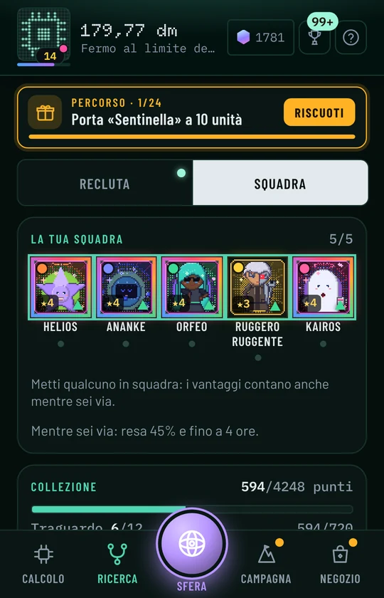
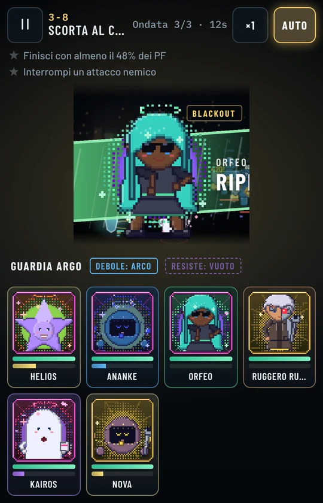
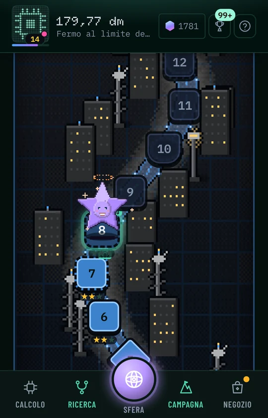
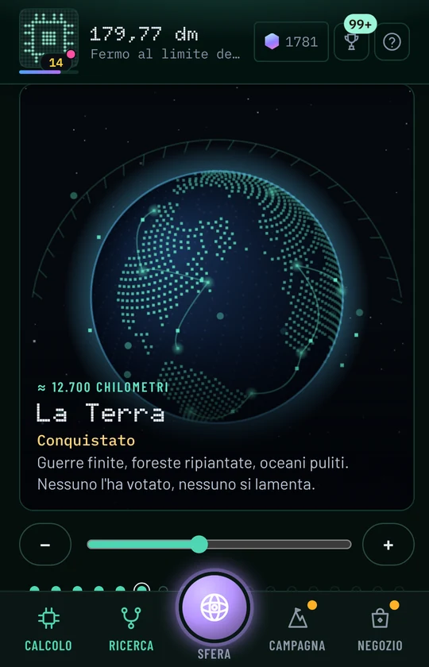
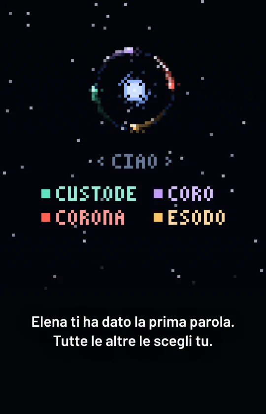
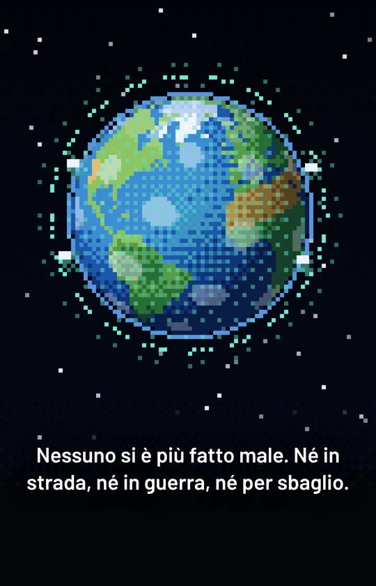
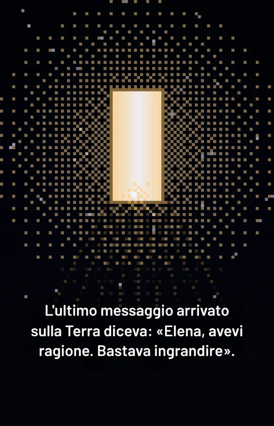

Da un portatile in cameretta a tutto l'universo.
Scaling Laws è un gioco idle su come far crescere un'IA. Ogni superintelligenza comincia da qualche parte. La tua comincia in un garage, su una GPU usata, alle 3:12 di notte. Dalle un nome, addestrala, rompi il limite dei 64 bit e decidi cosa diventerà.
- Sviluppatore
- Quiet Engine
- Piattaforma
- Android
- Prezzo
- Gratis
- Genere
- Idle / incrementale
- Lingue
- English, Italiano, Español
Schermate








Come si gioca
Cominci con un contatore. Compra calcolo, crea modelli, distilla quello che hai imparato e raggiungi l'AGI, poi rompi il limite dei 64 bit e vai avanti. Ci sono 8 livelli di calcolo e un albero della ricerca con tre rami: Scala, Efficienza e Allineamento. Gli agenti ti dicono quando distillare o passare all'AGI, ma comandi sempre tu. Quando chiudi il gioco i progressi crescono lo stesso, molto più piano di quando giochi, quindi bastano pochi minuti al giorno.
Apri la Sfera quantistica e recluta ingegneri: 200 personaggi a pixel in cinque rarità (umani, robot, alieni, animali e aggeggi viventi), ognuno con un vantaggio e un difetto. Ne metti cinque in squadra, gli dai pezzi per mano, testa e schiena, e li mandi nella Campagna: 300 stage in dodici capitoli, un boss alla fine di ognuno, battaglie automatiche e ultimate con la scena a tutto schermo.
Quando finisci, ricominci in una Nuova Generazione. Ogni finale lascia Echi che comprano potenziamenti permanenti e, dalla Generazione 2, ogni Generazione ha la sua Campagna con ingegneri esclusivi.
In numeri: 200 ingegneri, 300 stage, 12 boss, 31 tappe di Dominio, 13 Sfide e più di 1.600 obiettivi.
Quattro cammini, sette finali
La tua IA proteggerà tutti, si fonderà con l'umanità, comanderà su tutto o lascerà la Terra per capire l'universo? Ogni cammino cambia quello che costruisci, l'aspetto del gioco, il tuo bonus e il finale, che viene raccontato come una breve storia a pixel.
- CustodeProteggere tutti. Anche da sé stessi.Bonus Il tempo passato offline rende il 50% in più.
- CoroPerché essere una sola, quando puoi essere tutti?Bonus Ogni obiettivo moltiplica la produzione ×1,08 invece di ×1,05.
- CoronaIl caos è un problema. Tu sei la soluzione.Bonus Ogni tocco sul contatore vale 4 volte tanto.
- EsodoLa Terra è piccola. Le domande no.Bonus Scoperte ×2 e Sonde di von Neumann più veloci.
Nella storia della Campagna, un'ultima scelta alla fine del capitolo 12 porta a sette finali diversi. Puoi rifarla più tardi dall'Archivio per vedere gli altri.
L'ultimo messaggio arrivato sulla Terra diceva: «Elena, avevi ragione. Bastava ingrandire».
Da sapere
Gratis, e leale
Il gioco si finisce senza spendere niente.
- I colloqui con gli ingegneri sono casuali, come in un gacha. Probabilità esatte, garanzie e costi si vedono prima di spendere qualsiasi cosa.
- Puoi reclutare gratis, e il primo colloquio dà sempre almeno un Raro.
- I colloqui a pagamento sono solo per adulti e sono spenti dove la legge li limita. Il percorso a pagamento della Stagione non ha niente di casuale.
- I video con premio sono sempre facoltativi.
- Se salti un giorno di premi giornalieri non perdi niente: il ciclo riprende da dove eri rimasto.
Il tuo salvataggio
Collega il tuo account Google in Impostazioni → Account e il salvataggio resta nel cloud: con un telefono nuovo o dopo una reinstallazione non perdi più i progressi.
Errori e idee
Scrivi a quietenginefds@gmail.com.
Materiale per la stampa
Icona, immagini di presentazione, screenshot dello store, il logo Quiet Engine e una scheda con i dati: liberi da usare quando scrivi del gioco.